소방시설관리사 (2016-04-30 기출문제)
1과목: 방안전관리론
1. 표면연소(작열연소)에 관한 설명으로 옳지 않은 것은?
- 흑연, 목탄 등과 같이 휘발분이 거의 포함되지 않은 고체연료에서 주로 발생한다.
- 불꽃연소에 비해 일산화탄소가 발생할 가능성이 크다.
- 화학적 소화만 소화 효과가 있다.
- 불꽃연소에 비해 연소속도가 느리고 단위시간당 방출열량이 적다.
(정답률: 83%)

2. 요오드값(아이오딘값)에 관한 설명으로 옳지 않은 것은?
- 유지 100 g에 흡수된 요오드의 g 수로 표시한 값이다.
- 값이 클수록 불포화도가 낮고 반응성이 작다.
- 값이 클수록 공기 중에 노출되면 산화열 축적에 의해 자연발화하기 쉽다.
- 요오드값이 130 이상인 유지를 건성유라고 한다.
(정답률: 83%)
3. 연료가스의 분출속도가 연소속도보다 클 때, 주위 공기의 움직임에 따라 불꽃이 노즐에서 정착하지 않고 떨어져 꺼지는 현상은?
- 불완전연소(Incomplete combustion)
- 리프팅(Lifting)
- 블로우오프(Blow off)
- 역화(Back fire)
(정답률: 78%)
4. 액화가스 탱크폭발인 BLEVE(Boiling Liquid Expanding Vapor Explosion)의 방지대책으로 옳지 않은 것은?
- 탱크가 화염에 의해 가열되지 않도록 고정식 살수설비를 설치한다.
- 입열을 위하여 탱크를 지상에 설치한다.
- 용기 내압강도를 유지할 수 있도록 견고하게 탱크를 제작한다.
- 탱크 내벽에 열전도도가 큰 알루미늄 합금박판을 설치한다.
(정답률: 78%)
5. 40톤의 프로판이 증기운 폭발했을 때, TNT당량모델에 따른 TNT당량과 환산거리(폭발지점으로부터 100 m 지점)에 관한 설명으로 옳지 않은 것은? (단, 프로판의 연소열은 47 MJ/톤, TNT의 연소열은 4.7 MJ/톤, 폭발효율은 0.1이다.)
- TNT당량은 어떤 물질이 폭발할 때 내는 에너지와 동일 에너지를 내는 TNT중량을 말한다.
- 환산거리는 폭발의 영향범위 산정 및 폭풍파의 특성을 결정하는 데 사용된다.
- TNT당량값은 40,000 kg 이다.
- 환산거리값은 약 5.00 m/kg1/3 이다.
(정답률: 58%)
6. 건축물의 피난ㆍ방화구조 등의 기준에 관한 규칙상 고층건축물에 설치하는 피난용 승강기의 설치기준에 관한 설명으로 옳은 것은?
- 승강로의 상부 및 승강장에는 배연설비를 설치할 것
- 승강장에는 상용전원에 의한 조명설비만을 설치할 것
- 예비전원은 전용으로 하고 30분 동안 작동할 수 있는 용량의 것으로 할 것
- 승강장의 바닥면적은 피난용승강기 1대에 대하여 4제곱미터로 할 것
(정답률: 63%)
7. 초고층 및 지하연계 복합건축물 재난관리에 관한 특별법령상 종합방재실의 설치 기준에 관한 설명으로 옳지 않은 것은?
- 종합방재실과 방화구획된 부속실을 설치할 것
- 재난 및 안전관리에 필요한 인력은 2명을 상주하도록 할 것
- 면적은 20제곱미터 이상으로 할 것
- 종합방재실을 피난층이 아닌 2층에 설치하는 경우 특별피난계단 출입구로부터 5미터이내에 위치할 것
(정답률: 66%)
8. 다중이용업소의 안전관리에 관한 특별법령상 다중이용업이 아닌 것은?
- 수용인원이 400명인 학원
- 지상 3층에 설치된 영업장으로 사용하는 바닥면적의 합계가 66제곱미터인 일반음식점 영업
- 구획된 실(室) 안에 학습자가 공부할 수 있는 시설을 갖추고 숙박 또는 숙식을 제공하는 고시원업
- 노래연습장업
(정답률: 80%)
9. 열에너지원의 종류 중 화학열이 아닌 것은?
- 분해열
- 압축열
- 용해열
- 생성열
(정답률: 85%)
10. 소방시설 등의 성능위주설계 방법 및 기준상 화재 및 피난시뮬레이션의 시나리오 작성 시 국내 업무용도 건축물의 수용인원 산정기준은 1인당 몇 m2인가?
- 4.6
- 9.3
- 18.6
- 22.3
(정답률: 57%)
11. 1기압 상온에서 가연성 가스의 연소범위(vol %)로 옳지 않은 것은?
- 수소 : 4 ∼75
- 메탄 : 5 ∼ 15
- 암모니아 : 15 ∼28
- 일산화탄소 : 3 ∼ 11.5
(정답률: 79%)
12. 화재조사 용어 중 강소흔에 관한 설명으로 옳은 것은?
- 목재 등의 표면이 타 들어가 구갑상(龜甲狀)을 이루면서 탄화된 부분의 총 깊이
- 통전 상태에 있던 전선이 화재시의 열기로 인해 전선 피복이 타버리는 과정에서 전선의 심선이 서로 접촉될 때의 방전으로 생기는 용흔
- 목재표면이 불의 영향을 강하게 받아 심하게 탄 흔적으로 약 900℃ 수준의 불에 탄목재 표면층에서 나타나는 균열흔
- 가연물이 탈 때 발생하는 그을음 등의 입자가 공간 속을 흘러가며 물체 또는 공간 내 표면에 연기가 접촉해서 남겨 놓은 흔적
(정답률: 80%)
13. 1기압 상온에서 발화점(ignition point)이 가장 낮은 것은?
- 황린
- 이황화탄소
- 셀룰로이드
- 아세트알데히드
(정답률: 58%)
14. 다음에서 설명하는 것은?
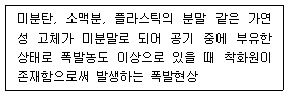
- 산화폭발
- 분무폭발
- 분진폭발
- 분해폭발
(정답률: 87%)
15. 화재성장속도 분류에서 약 1MW의 열량에 도달하는 시간이 600초인 것은?
- Slow 화재
- Medium 화재
- Fast 화재
- Ultra Fast 화재
(정답률: 75%)
16. 연소 시 발생하는 연소가스가 인체에 미치는 영향에 관한 설명으로 옳지 않은 것은?
- 포스겐은 독성이 매우 강한 가스로서 공기 중에 25 ppm만 있어도 1시간 이내에 사망한다.
- 아크롤레인은 눈과 호흡기를 자극하며, 기도장애를 일으킨다.
- 이산화탄소는 그 자체의 독성은 거의 없으나 다량이 존재할 경우 사람의 호흡속도를 증가시켜 화재가스에 혼합된 유해가스의 흡입을 증가시킨다.
- 시안화수소는 달걀 썩는 냄새가 나는 특성이 있으며, 공기 중에 0.02%의 농도만으로도 치명적인 위험상태에 빠질 수가 있다.
(정답률: 64%)
17. 바닥으로부터 높이 0.2 m의 위치에 개구부(가로 2 m × 세로 2 m) 1개가 있는 창고(바닥면적 가로 3 m × 세로 4 m, 높이 3 m)에 화재가 발생하였을 때, Flash over 발생에 필요한 최소한의 열방출속도 Qfo는 몇 kW인가? (단, Thomas의 공식 Qfo(kW)=7.8AT+378A√H을 이용하며, 소수점 이하 셋째자리에서 반올림한다.)
- 2528.29
- 2559.49
- 2621.89
- 2653.09
(정답률: 46%)
18. 힌클리(Hinkley) 공식을 이용하여 실내 화재 시 연기의 하강시간을 계산할 때 필요한 자료로 옳은 것을 모두 고른 것은?
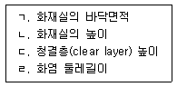
- ㄱ, ㄴ
- ㄴ, ㄹ
- ㄱ, ㄷ, ㄹ
- ㄱ, ㄴ, ㄷ, ㄹ
(정답률: 72%)
19. 국내 화재 분류에서 A급화재에 해당하는 것은?
- 일반화재
- 유류화재
- 전기화재
- 금속화재
(정답률: 85%)
20. 연소과정에 따른 시간과 에너지의 관계를 나타내는 그림에서 연소열을 나타내는 구간은?
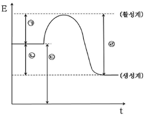
- ㉠
- ㉡
- ㉢
- ㉣
(정답률: 63%)
21. 정상상태에서 위험분위기가 지속적으로 또는 장기적으로 존재하는 배관 내부에 적합한 방폭구조는?
- 내압방폭구조
- 본질안전방폭구조
- 압력방폭구조
- 안전증방폭구조
(정답률: 67%)
22. 다음에서 설명하는 인간의 피난행동 특성은?
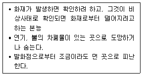
- 추종본능
- 귀소본능
- 퇴피본능
- 지광본능
(정답률: 86%)
23. 폭연과 폭굉에 관한 설명으로 옳은 것은?
- 폭연은 압력파가 미반응 매질 속으로 음속 이하로 이동하는 폭발 현상을 말한다.
- 폭연은 폭굉으로 전이될 수 없다.
- 폭굉의 최고 압력은 초기 압력과 동일하다.
- 폭굉의 파면에서는 온도, 압력, 밀도가 연속적으로 나타난다.
(정답률: 75%)
24. 가로 10 m, 세로 10 m, 높이 5 m인 공간에 저장되어 있는 발열량 13,500 kcal/kg인 가연물 2,000 kg과 발열량 9,000 kcal/kg인 가연물 1,000 kg이 완전연소 하였을 때 화재하중은 몇 kg/m2인가? (단, 목재의 단위 발열량은 4,500 kcal/kg이다.)
- 20
- 40
- 60
- 80
(정답률: 76%)
25. 물리적 소화방법이 아닌 것은?
- 질식소화
- 냉각소화
- 제거소화
- 억제소화
(정답률: 80%)
2과목: 소방수리학·약제화학 및 소방전
26. 뉴턴의 점성법칙과 관계가 없는 것은?
- 점성계수
- 속도기울기
- 전단응력
- 압력
(정답률: 67%)
27. 단일 재질로 두께가 20 cm인 벽체의 양면 온도가 각각 800 ℃와 100 ℃라면 이 벽체를 통하여 단위면적(m2)당 1시간(hr) 동안 전도에 의해 전달되는 열의 양은 몇 J인가? (단, 열전도계수는 4 J/mㆍhrㆍK이다.)
- 14,000
- 16,000
- 18,000
- 20,000
(정답률: 44%)
28. 베르누이(Bernoulli)식에 관한 설명으로 옳지 않은 것은?
- 배관내의 모든 지점에서 위치수두, 속도수두, 압력수두의 합은 일정하다.
- 수평으로 설치된 배관의 위치수두는 일정하다.
- 수력구배선은 위치수두와 속도수두의 합을 이은 선을 말한다.
- 구경이 커지면 유속이 감소되어 속도수두는 감소한다.
(정답률: 64%)
29. 다음 그림과 같이 수조 벽면에 설치된 오리피스로 유량 Q의 물이 방출되고 있다. 이때 수위가 감소하여 1/4 h가 되었다면 방출유량은 얼마인가? (단, 점성에 의한 영향 등은 무시한다.)
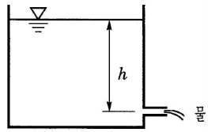
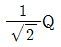
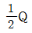
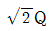
- 2Q
(정답률: 68%)
30. 온도가 35 ℃이고 절대압력이 6,000 kPa인 공기의 비중량은 약 몇 N/m3인가? (단, 공기의 기체상수는 R = 286.8 J/kgㆍK 이고, 중력가속도 g = 9.8 m/sec2 이다.)
- 579
- 666
- 755
- 886
(정답률: 44%)
31. 지름이 10 cm인 원형배관에 물이 층류로 흐르고 있다. 이 때 물의 최대 평균 유속은 약 몇 m/s인가? (단, 동점성계수는 v=1.006×10-6m2/s, 임계레이놀드수는 2,100이다.)
- 0.021
- 0.21
- 2.1
- 21
(정답률: 48%)
32. 배관의 마찰손실압력을 계산할 수 있는 하이젠-윌리암스(Hazen-Williams)식에 관한 설명으로 옳지 않은 것은?
- 마찰손실은 유량의 1.85승에 정비례한다.
- 마찰손실은 배관 내경의 4.87승에 반비례한다.
- 마찰손실은 관마찰손실계수의 1.85승에 정비례한다.
- 관경은 호칭경 보다 배관의 내경을 대입한다.
(정답률: 72%)
33. 원형배관 내부로 흐르는 유체의 레이놀드수가 1,000일 때 마찰손실계수는 얼마인가?
- 0.024
- 0.064
- 0.076
- 0.098
(정답률: 70%)
34. 펌프의 공동현상(cavitation)의 방지방법이 아닌 것은?
- 수조의 밑 부분에 배수밸브 및 배수관을 설치해 둔다.
- 펌프의 설치위치를 수조의 수위보다 낮게 한다.
- 흡입 관로의 마찰손실을 줄인다.
- 양흡입 펌프를 선정한다.
(정답률: 65%)
35. 제3종 분말소화약제에 해당하는 것을 모두 고른 것은?
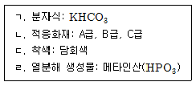
- ㄱ, ㄷ
- ㄱ, ㄹ
- ㄴ, ㄷ
- ㄴ, ㄹ
(정답률: 78%)
36. 이산화탄소 소화약제에 관한 설명으로 옳지 않은 것은? (문제 오류로 실제 시험에서는 1, 4번이 정답처리 되었습니다. 여기서는 1번을 누르면 정답 처리 됩니다.)
- 이온결합 물질이다.
- 기체의 비중은 약 1.52로 공기보다 무겁다.
- 1기압 상온에서 무색 기체이다.
- 삼중점은 1기압에서 약 - 56℃이다.
(정답률: 74%)
37. 포소화약제가 연소표면을 덮어 공기 접촉을 차단하는 소화원리는?
- 냉각소화
- 질식소화
- 탈수소화
- 부촉매소화
(정답률: 78%)
38. 1기압에서 20 ℃의 물 10 kg을 100 ℃의 수증기로 만들 때 필요한 열량은 약 몇 kJ인가? (단, 물의 비열은 4.2 kJ/kgㆍK, 증발잠열은 2,263.8 kJ/kg, 융해잠열은 336 kJ/kg로 한다.)
- 15,998
- 25,998
- 35,998
- 45,998
(정답률: 67%)
39. 할로겐 원소가 아닌 것은?
- Cl
- Br
- At
- Ne
(정답률: 62%)
40. 농도가 6.5 wt%인 단백포 소화약제 수용액 1 kg에 물을 첨가하여 농도가 1.5 wt%인 단백포 소화약제 수용액으로 만들고자 한다. 이때 첨가해야 하는 물의 양은 약 몇 kg인가?
- 2.22 kg
- 2.78 kg
- 3.33 kg
- 3.88 kg
(정답률: 50%)
41. 할로겐화합물소화설비의 화재안전기준(NFSC 107)상 할로겐화합물 소화약제의 저장용기 등에 관한 기준이다. ( )안에 들어갈 내용으로 모두 옳은 것은?
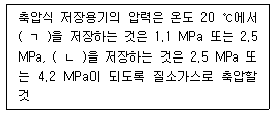
- ㄱ: 할론 1211, ㄴ: 할론 1301
- ㄱ: 할론 1211, ㄴ: 할론 2402
- ㄱ: 할론 1301, ㄴ: 할론 2402
- ㄱ: 할론 1011, ㄴ: 할론 1301
(정답률: 51%)
42. 콘덴서의 정전용량에 관한 설명으로 옳지 않은 것은?
- 전극 사이에 삽입된 절연물의 투자율에 비례한다.
- 동일한 정전용량을 갖는 콘덴서 2개를 병렬 연결하면 합성 정전용량은 2배가 된다.
- 전극이 전하를 축적할 수 있는 능력의 정도를 나타내는 비례상수이다.
- 전극 사이의 간격에 반비례한다.
(정답률: 55%)
43. 기전력이 E이고 내부저항이 r인 같은 종류의 전지 3개를 병렬 접속하여 부하저항 R에 연결하였다. 부하저항 R에 흐르는 전류 I는?
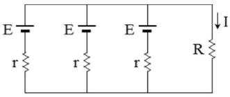
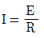
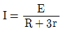
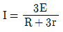
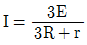
(정답률: 40%)
44. 우리나라에서 사용하는 단상 220V, 60Hz인 배전전압의 최대값은 약 몇 V인가?
- 156
- 220
- 311
- 346
(정답률: 64%)
45. 감지기 배선으로 단면적 1.5 mm2인 구리 전선을 2km 사용하였다. 이 전선의 저항은 약 몇 Ω인가? (단, 구리의 고유저항은 1.72×10 -8 Ωㆍm이다.)
- 8
- 12
- 18
- 23
(정답률: 52%)
46. 400V 미만의 저압용 기기에 실시하는 접지공사 종류와 접지저항값의 기준으로 옳은 것은?
- 제2종 접지공사: 10 Ω 이하
- 제3종 접지공사: 100 Ω 이하
- 특별 제3종 접지공사: 50 Ω 이하
- 특별 제3종 접지공사: 10 Ω 이하
(정답률: 55%)
47. 교류전력에 관한 내용으로 옳지 않은 것은?
- 저항 4Ω과 코일 3Ω이 직렬 연결되어 있고 100 V, 60 Hz인 전압을 공급하면 유효 전력은 1.6 kW 이다.
- 공진주파수에서 유효전력과 피상전력은 같다.
- kvar는 무효전력의 단위이다.
- kW는 피상전력의 단위이다.
(정답률: 62%)
48. 피드백(feedback) 제어시스템의 특징으로 옳은 것은?
- 개루프 제어시스템에 비하여 감도(입력 대 출력 비)가 증가한다.
- 개루프 제어시스템에 비하여 대역폭이 감소한다.
- 입력과 출력을 비교하는 기능이 있다.
- 개루프 제어시스템에 비하여 구조는 간단하나 설치비용이 비싸다.
(정답률: 64%)
49. 다음 그림의 논리회로와 동일한 동작을 하는 회로는?
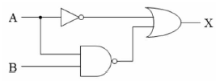
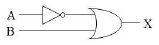
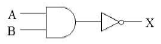
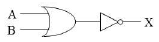
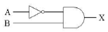
(정답률: 39%)
50. 다음 시퀀스회로에 관한 설명으로 옳지 않은 것은?
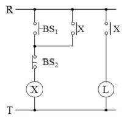
- BS1를 누르고 BS2를 누르지 않으면 L이 ON상태가 된다.
- BS1은 a접점을 사용하였으며, BS2는 b접점을 사용하였다.
- 코일 X가 접점 X를 동작시키기 때문에 인터록 회로라고 한다.
- ON 상태가 되어 있는 L을 OFF 상태로 변화시키기 위해 BS2를 누른다.
(정답률: 64%)
3과목: 소방관련법령
51. 소방기본법령상 소방용수시설 중 저수조의 설치기준으로 옳지 않은 것은?
- 지면으로부터의 낙차가 4.5미터 이하일 것
- 흡수부분의 수심이 0.5미터 이상일 것
- 흡수관의 투입구가 원형의 경우에는 지름이 50센티미터 이상일 것
- 저수조에 물을 공급하는 방법은 상수도에 연결하여 자동으로 급수되는 구조일 것
(정답률: 71%)
52. 소방기본법령상 소방신호의 종류별 신호방법에 관한 설명으로 옳은 것은?
- 경계신호의 타종신호는 1타와 연2타를 반복하며, 싸이렌신호는 5초 간격을 두고 10초씩 3회이다.
- 발화신호의 타종신호는 난타이며, 싸이렌신호는 5초 간격을 두고 5초씩 3회이다.
- 해제신호의 타종신호는 상당한 간격을 두고 1타씩 반복하며, 싸이렌신호는 30초간 1회이다.
- 훈련신호의 타종신호는 연3타 반복이며, 싸이렌신호는 30초 간격을 두고 1분씩 3회이다.
(정답률: 63%)
53. 소방기본법령상 소방활동 종사 명령에 관한 설명으로 옳지 않은 것은?
- 소방서장은 소방활동 종사명령을 받은 자에게 소방활동에 필요한 보호장구를 지급하는 등 안전을 위한 조치를 하여야 한다.
- 소방대장은 화재 등 위급한 상황이 발생한 현장에서 소방활동을 위하여 필요할 때에는 그 현장에 있는 자에게 소방활동 종사명령을 할 수 있다.
- 소방대상물에 화재 등 위급한 상황이 발생한 경우 소방활동에 종사한 소방대상물의 점유자는 소방활동 비용을 지급받을 수 있다.
- 시ㆍ도지사는 소방활동 종사명령에 따라 소방활동에 종사한 자가 그로 인하여 사망하거나 부상을 입은 경우에는 보상하여야 한다.
(정답률: 65%)
54. 소방기본법령상 화재경계지구의 지정 등에 관한 설명으로 옳은 것은?
- 소방서장은 화재경계지구 안의 관계인에 대하여 대통령령으로 정하는 바에 따라 소방에 필요한 훈련 및 교육을 실시할 수 있다.
- 소방본부장은 소방상 필요한 교육을 실시하고자 하는 때에는 화재경계지구 안의 관계인에게 교육 7일 전까지 그 사실을 통보하여야 한다.
- 소방서장은 화재가 발생할 우려가 높거나 화재로 인하여 피해가 클 것으로 예상되는 시장지역을 화재경계지구로 지정할 수 있다.
- 시ㆍ도지사는 소방특별조사를 한 결과 화재의 예방과 경계를 위하여 필요할 경우 관계인에게 소방설비의 설치를 명할 수 있다.
(정답률: 46%)
55. 소방시설공사업법령상 1년 이하의 징역 또는 1천만원 이하의 벌금에 처해질 수 없는 자는?
- 소방시설공사업법을 위반하여 시공을 한 소방시설공사업을 등록한 자
- 해당 소방시설업자가 아닌 자에게 소방시설공사등을 도급한 특정소방대상물의 관계인
- 공사감리 결과의 통보 또는 공사감리 결과보고서의 제출을 거짓으로 한 소방공사 감리업을 등록한 자
- 등록증이나 등록수첩을 다른 자에게 빌려준 소방시설업자
(정답률: 49%)
56. 소방시설공사업법령상 감리업자가 감리원 배치규정을 위반하여 소속 감리원을 소방시설공사 현장에 배치하지 아니한 경우에 해당되는 벌칙 기준은?
- 100만원 이하의 벌금
- 200만원 이하의 과태료
- 300만원 이하의 벌금
- 500만원 이하의 벌금
(정답률: 58%)
57. 소방시설공사업법령상 지하층을 포함한 층수가 40층이고, 연면적이 20만제곱미터인 특정소방대상물의 공사 현장에 배치해야 하는 소방기술자의 배치기준으로 옳은 것은?
- 총리령으로 정하는 특급기술자인 소방기술자(기계분야 및 전기분야)
- 총리령으로 정하는 고급기술자 이상의 소방기술자(기계분야 및 전기분야)
- 총리령으로 정하는 중급기술자 이상의 소방기술자(기계분야 및 전기분야)
- 총리령으로 정하는 초급기술자 이상의 소방기술자(기계분야 및 전기분야)
(정답률: 63%)
58. 화재예방, 소방시설 설치ㆍ유지 및 안전관리에 관한 법령상 소화활동설비에 해당하지 않는 것은?
- 상수도소화용수설비
- 무선통신보조설비
- 비상콘센트설비
- 연결살수설비
(정답률: 69%)
59. 화재예방, 소방시설 설치ㆍ유지 및 안전관리에 관한 법령상 1급 소방안전관리 업무 강습과목 및 시간으로 옳은 것은?(관련 규정 개정전 문제로 여기서는 기존 정답인 2번을 누르면 정답 처리됩니다. 자세한 내용은 해설을 참고하세요.)
- 소방 기초이론: 2시간
- 건축ㆍ전기 및 가스관계법령: 2시간
- 위험물 실무: 4시간
- 연소 및 소화이론: 3시간
(정답률: 40%)
60. 화재예방, 소방시설 설치ㆍ유지 및 안전관리에 관한 법령상 건축허가등을 할 때 미리 소방본부장 또는 소방서장의 동의를 받아야 하는 건축물의 범위로 옳지 않은 것은?
- 지하층 또는 무창층이 있는 공연장으로서 바닥면적이 100제곱미터 이상인 층이 있는 것
- 연면적이 200제곱미터 이상인 노유자시설(老幼者施設) 및 수련시설
- 연면적이 300제곱미터 이상인 장애인 의료재활시설
- 주차용도로 사용되는 시설로 승강기 등 기계장치에 의한 주차시설로서 자동차 10대이상을 주차할 수 있는 시설
(정답률: 76%)
61. 화재예방, 소방시설 설치ㆍ유지 및 안전관리에 관한 법령상 건축허가등의 동의요구에 대한 조문의 내용이다. ( ) 안에 들어갈 숫자가 바르게 나열된 것은?
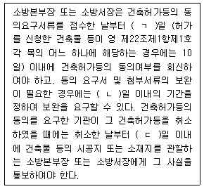
- ㄱ: 5, ㄴ: 4, ㄷ: 7
- ㄱ: 5, ㄴ: 5, ㄷ: 7
- ㄱ: 7, ㄴ: 3, ㄷ: 7
- ㄱ: 7, ㄴ: 4, ㄷ: 5
(정답률: 46%)
62. 화재예방, 소방시설 설치ㆍ유지 및 안전관리에 관한 법령상 국민안전처장관이 정하는 내진설계기준에 맞게 설치하여야 하는 소방시설은? (단, 내진설계기준을 적용하여야 하는 소방시설을 설치하여야 하는 특정소방대상물의 경우에 한함)
- 자동화재탐지설비
- 옥외소화전설비
- 물분무등소화설비
- 비상경보설비
(정답률: 61%)
63. 화재예방, 소방시설 설치ㆍ유지 및 안전관리에 관한 법령상 방염대상물품에 대한 방염성능기준으로 옳은 것은? (단, 고시는 고려하지 않음)
- 버너의 불꽃을 제거한 때부터 불꽃을 올리며 연소하는 상태가 그칠 때까지 시간은 30초 이내일 것
- 탄화(炭化)한 면적은 100제곱센티미터 이내, 탄화한 길이는 30센티미터 이내일 것
- 불꽃에 의하여 완전히 녹을 때까지 불꽃의 접촉 횟수는 2회 이상일 것
- 버너의 불꽃을 제거한 때부터 불꽃을 올리지 아니하고 연소하는 상태가 그칠 때까지 시간은 30초 이내일 것
(정답률: 62%)
64. 화재예방, 소방시설 설치ㆍ유지 및 안전관리에 관한 법령상 시ㆍ도지사가 소방시설관리업 등록을 반드시 취소하여야 하는 사유가 아닌 것은?
- 소방시설관리업자가 거짓이나 그 밖의 부정한 방법으로 등록을 한 경우
- 소방시설관리업자가 소방시설등의 자체점검 결과를 거짓으로 보고한 경우
- 소방시설관리업자가 피성년후견인이 된 경우
- 소방시설관리업자가 관리업의 등록증을 다른 자에게 빌려준 경우
(정답률: 65%)
65. 화재예방, 소방시설 설치ㆍ유지 및 안전관리에 관한 법령상 소방용품의 성능인증 등을 위반하여 합격표시를 하지 아니한 소방용품을 판매한 경우의 벌칙 기준은? (관련 규정 개정전 문제로 여기서는 기존 정답인 4번을 누르면 정답 처리됩니다. 자세한 내용은 해설을 참고하세요.)
- 200만원 이하의 과태료
- 300만원 이하의 벌금
- 1년 이하의 징역 또는 1천만원 이하의 벌금
- 3년 이하의 징역 또는 1천500만원 이하의 벌금
(정답률: 50%)
66. 화재예방, 소방시설 설치ㆍ유지 및 안전관리에 관한 법령상 국민안전처장관이 한국소방산업기술원에 위탁할 수 있는 것은?
- 합판ㆍ목재를 설치하는 현장에서 방염처리한 경우의 방염성능검사
- 소방용품에 대한 형식승인의 변경승인
- 소방안전관리에 대한 교육 업무
- 소방용품에 대한 교체 등의 명령에 대한 권한
(정답률: 56%)
67. 화재예방, 소방시설 설치ㆍ유지 및 안전관리에 관한 법령상 방염성능기준 이상의 실내장식물 등을 설치하여야 하는 특정소방대상물에 해당하는 것은?
- 옥외에 설치된 문화 및 집회시설
- 건축물의 옥내에 있는 종교시설
- 3층 건축물의 옥내에 있는 수영장
- 층수가 11층 이상인 아파트
(정답률: 65%)
68. 위험물안전관리법령상 위험물시설의 안전관리에 관한 설명으로 옳지 않은 것은?
- 위험물안전관리자를 선임하여야 하는 제조소등의 경우, 안전관리자를 선임한 제조소등의 관계인은 그 안전관리자를 해임하거나 안전관리자가 퇴직한 때에는 해임하거나 퇴직한 날부터 30일 이내에 다시 안전관리자를 선임하여야 한다.
- 암반탱크저장소는 관계인이 예방규정을 정하여야 하는 제조소등에 포함된다.
- 정기검사의 대상인 제조소등이라 함은 액체위험물을 저장 또는 취급하는 100만리터 이상의 옥외탱크저장소를 말한다.
- 탱크안전성능시험자가 되고자 하는 자는 대통령령이 정하는 기술능력ㆍ시설 및 장비를 갖추어 국민안전처장관에게 등록하여야 한다.
(정답률: 50%)
69. 위험물안전관리법령상 지정수량 미만인 위험물의 저장 또는 취급에 관한 기술상의 기준을 정하는 것은?
- 대통령령
- 총리령
- 행정자치부령
- 시ㆍ도의 조례
(정답률: 68%)
70. 위험물안전관리법령상 위험물탱크 안전성능 검사를 받아야 하는 경우 그 신청시기에 관한 설명으로 옳은 것은?
- 기초ㆍ지반검사는 위험물탱크의 기초 및 지반에 관한 공사의 개시 후에 한다.
- 용접부 검사는 탱크 본체에 관한 공사의 개시 전에 한다.
- 충수ㆍ수압검사는 탱크에 배관 그 밖의 부속설비를 부착한 후에 한다.
- 암반탱크검사는 암반탱크의 본체에 관한 공사의 개시 후에 한다.
(정답률: 67%)
71. 위험물안전관리법령상 취급소의 구분에 해당하지 않는 것은?
- 주유취급소
- 판매취급소
- 이송취급소
- 간이취급소
(정답률: 60%)
72. 다중이용업소의 안전관리에 관한 특별법령상 안전시설등에 해당하지 않는 것은?
- 옥내소화전설비
- 구조대
- 영업장 내부 피난통로
- 창문
(정답률: 54%)
73. 다중이용업소의 안전관리에 관한 특별법령상 다중이용업주와 종업원이 받아야 하는 소방안전교육의 교과과정으로 옳지 않은 것은?
- 심폐소생술 등 응급처치 요령
- 소방시설 및 방화시설의 유지ㆍ관리 및 사용방법
- 소방시설설계 도면의 작성 요령
- 화재안전과 관련된 법령 및 제도
(정답률: 79%)
74. 다중이용업소의 안전관리에 관한 특별법령상 다중이용업소의 안전관리기본계획 등에 관한 설명으로 옳은 것은?
- 국민안전처장관은 5년마다 다중이용업소의 안전관리기본계획을 수립ㆍ시행하여야한다.
- 소방본부장은 기본계획에 따라 매년 연도별 안전관리계획을 수립ㆍ시행하여야 한다.
- 소방서장은 기본계획 및 연도별 계획에 따라 매년 안전관리집행계획을 수립한다.
- 국무총리는 기본계획을 수립하면 대통령에게 보고하고 관계 중앙행정기관의 장과 시ㆍ도지사에게 통보한 후 이를 공고하여야 한다.
(정답률: 45%)
75. 다중이용업소의 안전관리에 관한 특별법령상 다중이용업주의 화재배상책임보험의 의무가입 등에 관한 설명으로 옳은 것은?
- 보험회사는 화재배상책임보험 외에 다른 보험의 가입을 다중이용업주에게 강요할 수 있다.
- 보험회사는 화재배상책임보험의 보험금 청구를 받은 때에는 지체없이 지급할 보험금을 결정하고 보험금 결정 후 30일 이내에 피해자에게 보험금을 지급하여야 한다.
- 다중이용업주가 화재배상책임보험 청약 당시 보험회사가 요청한 화재 발생 위험에 관한 중요한 사항을 거짓으로 알린 경우 보험회사는 그 계약의 체결을 거부할 수 있다.
- 소방서장은 다중이용업주가 화재배상책임보험에 가입하지 아니하였을 때에는 다중이용 업주에 대한 인가ㆍ허가의 취소를 하여야 한다.
(정답률: 66%)
4과목: 위험물의 성상 및 시설기준
76. 니트로셀룰로오스에 관한 설명으로 옳지 않은 것은?
- 질산에스테르류에 속하며 자기반응성물질이다.
- 직사광선에 의해 분해하여 자연발화할 수 있다.
- 질화도가 클수록 분해도, 폭발성, 위험도가 감소한다.
- 저장ㆍ운반 시에는 물 또는 알코올을 첨가하여 위험성을 감소시킨다.
(정답률: 59%)
77. 상온에서 저장ㆍ취급 시 물과 접촉하면 위험한 것을 모두 고른 것은?
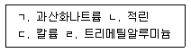
- ㄱ, ㄴ, ㄷ
- ㄱ, ㄴ, ㄹ
- ㄱ, ㄷ, ㄹ
- ㄴ, ㄷ, ㄹ
(정답률: 66%)
78. 제2류 위험물에 관한 설명으로 옳지 않은 것은?
- 철분, 마그네슘은 산과 반응하여 산소를 발생한다.
- 유황은 가연성고체로 푸른 불꽃을 내며 연소한다.
- 적린이 연소하면 유독성의 P2O5가 발생한다.
- 산화제와 혼합하면 가열, 충격, 마찰에 의해 발화ㆍ폭발의 위험이 있다.
(정답률: 72%)
79. 제3류 위험물인 황린에 관한 설명으로 옳은 것은?
- 증기는 자극성과 독성이 없다.
- 환원력이 약해 산소농도가 높아야 연소한다.
- 갈색 또는 회색의 고체로 증기는 공기보다 가볍다.
- 공기 중에서 자연발화의 위험성이 있어 물 속에 저장한다.
(정답률: 73%)
80. 위험물안전관리법령상 제4류 위험물의 품명별 위험등급이 바르게 짝지어진 것은?
- 알코올류 - Ⅰ등급
- 특수인화물 - Ⅰ등급
- 제2석유류 중 수용성액체 - Ⅱ등급
- 제3석유류 중 비수용성액체 - Ⅱ등급
(정답률: 70%)
81. 제5류 위험물인 유기과산화물에 관한 설명으로 옳지 않은 것은?
- 불티, 불꽃 등의 화기를 엄금한다.
- 직사광선을 피하고 냉암소에 저장한다.
- 누출 시 과산화수소로 혼합시켜 제거한다.
- 벤조일퍼옥사이드는 진한 황산과 혼촉 시 분해를 일으켜 폭발한다.
(정답률: 67%)
82. 제6류 위험물에 관한 설명으로 옳지 않은 것은?
- 모두 불연성물질이다.
- 위험물안전관리법령상 모든 품명의 위험등급은 Ⅱ등급이다.
- 과산화수소 저장용기의 뚜껑은 가스가 배출되는 구조로 한다.
- 질산이 목탄분, 솜뭉치와 같은 가연물에 스며들면 자연발화의 위험이 있다.
(정답률: 66%)
83. 제1류 위험물에 관한 설명으로 옳지 않은 것은?
- 과망간산칼륨과 중크롬산암모늄의 색상은 각각 등적색과 흑색이다.
- 염소산칼륨은 황산과 반응하여 이산화염소를 발생한다.
- 아염소산나트륨은 강산화제이며 가열에 의해 분해하여 산소를 발생한다.
- 질산암모늄은 급격한 가열, 충격에 의해 분해하여 폭발할 수 있다.
(정답률: 50%)
84. 위험물안전관리법령상 제2류 위험물에 관한 설명으로 옳지 않은 것은?
- 유황은 순도가 60중량퍼센트 이상인 것을 말하며 지정수량은 100 kg이다.
- 마그네슘은 직경 2 mm 이상의 막대 모양의 것을 말하며 지정수량은 100 kg이다.
- 인화성고체라 함은 고형알코올 그 밖에 1기압에서 인화점이 섭씨 40도 미만인 고체를 말하며 지정수량은 1,000 kg이다.
- 철분이라 함은 철의 분말로서 53마이크로미터의 표준체를 통과하는 것이 50중량퍼센트 이상이어야 하며 지정수량은 500 kg이다.
(정답률: 72%)
85. 위험물안전관리법령상 제3류 위험물의 품명별 지정수량이 바르게 짝지어진 것은?
- 나트륨, 황린 - 10 kg
- 알킬알루미늄, 알킬리튬 - 20 kg
- 금속의 수소화물, 금속의 인화물 - 50 kg
- 칼슘의 탄화물, 알루미늄의 탄화물 - 300 kg
(정답률: 50%)
86. 제6류 위험물인 과염소산에 관한 설명으로 옳지 않은 것은?
- 공기와 접촉 시 황적색의 인화수소가 발생한다.
- 무색ㆍ무취의 액체로 물과 접촉하면 발열한다.
- 무수물은 불안정하여 가열하면 폭발적으로 분해한다.
- 저장 시에는 가연성물질과의 접촉을 피하여야 한다.
(정답률: 66%)
87. 이황화탄소에 관한 설명으로 옳지 않은 것은?
- 인화점이 낮고 휘발이 용이하여 화재위험성이 크다.
- 공기 중에서 연소하면 유독성의 이산화황을 발생한다.
- 증기는 공기보다 무겁고, 매우 유독하여 흡입 시 신경계통에 장애를 준다.
- 액체비중이 물보다 작고 물에 녹기 어렵기 때문에 수조탱크에 넣어 보관한다.
(정답률: 49%)
88. 위험물안전관리법령상 제조소의 특례기준에서 은ㆍ수은ㆍ동ㆍ마그네슘 또는 이들의 합금으로 된 취급설비를 사용해서는 안 되는 위험물은?
- 아세트알데히드
- 휘발유
- 톨루엔
- 아세톤
(정답률: 76%)
89. 위험물안전관리법령상 제조소에 피뢰침을 설치하여야 하는 경우 취급하는 위험물의 수량은 지정수량의 최소 몇 배 이상이어야 하는가? (단, 제조소에서 취급하는 위험물은 경유이며, 제조소에 피뢰침을 반드시 설치하는 경우에 한한다.)
- 5
- 10
- 15
- 20
(정답률: 65%)
90. 위험물안전관리법령상 연면적 500 m2 이상인 제조소에 반드시 설치하여야 하는 경보 설비는?
- 확성장치
- 비상경보설비
- 비상방송설비
- 자동화재탐지설비
(정답률: 65%)
91. 위험물안전관리법령상 주유취급소의 위치ㆍ구조 및 설비의 기준에 관한 조문의 일부이다. ( )에 들어갈 숫자가 바르게 나열된 것은?
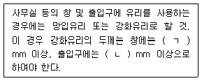
- ㄱ: 5, ㄴ: 10
- ㄱ: 5, ㄴ: 12
- ㄱ: 8, ㄴ: 10
- ㄱ: 8, ㄴ: 12
(정답률: 62%)
92. 위험물안전관리법령상 제조소와 수용인원이 300인 이상인 영화상영관과의 안전거리 기준으로 옳은 것은? (단, 6류 위험물을 취급하는 제조소를 제외한다.)
- 10 m 이상
- 20 m 이상
- 30 m 이상
- 50 m 이상
(정답률: 71%)
93. 위험물안전관리법령상 제조소에 설치하는 배출설비에 관한 설명으로 옳지 않은 것은?
- 위험물취급설비가 배관이음 등으로만 된 경우에는 전역방식으로 할 수 있다.
- 전역방식 배출설비의 배출능력은 1시간당 바닥면적 1m2 당 15m3 이상으로 하여야한다.
- 배출구는 지상 2m 이상으로서 연소의 우려가 없는 장소에 설치하여야 한다.
- 배풍기ㆍ배출닥트ㆍ후드 등을 이용하여 강제적으로 배출하는 것으로 하여야 한다.
(정답률: 69%)
94. 위험물안전관리법령상 소화설비, 경보설비 및 피난설비의 기준에 관한 조문의 일부이다. ( )에 들어갈 숫자는?
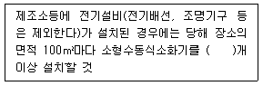
- 1
- 2
- 3
- 4
(정답률: 62%)
95. 옥외탱크저장소의 하나의 방유제 안에 3기의 아세톤 저장탱크가 있다. 위험물안전관리 법령상 탱크 주위에 설치하여야 할 방유제 용량은 최소 몇 L 이상이어야 하는가? (단, 아세톤 저장탱크의 용량은 각각 10,000 L, 20,000 L, 30,000 L이다.)
- 10,000
- 22,000
- 33,000
- 60,000
(정답률: 68%)
96. 위험물안전관리법령상 용량 80 L 수조(소화전용물통 3개 포함)의 능력단위는?
- 0.5
- 1.0
- 1.5
- 2.0
(정답률: 49%)
97. 위험물안전관리법령상 판매취급소의 위치ㆍ구조 및 설비의 기준으로 옳지 않은 것은?
- 제1종 판매취급소는 건축물의 1층에 설치할 것
- 제1종 판매취급소의 용도로 사용하는 부분의 창 및 출입구에는 갑종방화문 또는 을종방화문을 설치할 것
- 제2종 판매취급소의 용도로 사용하는 부분은 벽ㆍ기둥ㆍ바닥 및 보를 내화구조로 할 것
- 제2종 판매취급소의 용도로 사용하는 부분에 천장이 있는 경우에는 이를 난연재료로 할 것
(정답률: 62%)
98. 위험물안전관리법령상 에탄올 2,000 L를 취급하는 제조소 건축물 주위에 보유하여야 할 공지의 너비기준으로 옳은 것은?
- 2 m 이상
- 3 m 이상
- 4 m 이상
- 5 m 이상
(정답률: 58%)
99. 위험물안전관리법령상 간이탱크저장소의 위치ㆍ구조 및 설비의 기준에 관한 조문의 일부이다. ( )에 들어갈 숫자가 바르게 나열된 것은?
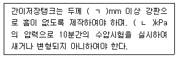
- ㄱ: 2.3, ㄴ: 60
- ㄱ: 2.3, ㄴ: 70
- ㄱ: 3.2, ㄴ: 60
- ㄱ: 3.2, ㄴ: 70
(정답률: 75%)
100. 위험물안전관리법령상 옥내저장소의 표지 및 게시판의 기준으로 옳지 않은 것은?
- 표지의 바탕은 백색으로, 문자는 흑색으로 할 것
- 표지는 한 변의 길이가 0.3 m 이상, 다른 한 변의 길이가 0.6 m 이상인 직사각형으로 할 것
- 인화성고체를 제외한 제2류 위험물에 있어서는 "화기엄금"의 게시판을 설치할 것
- "물기엄금"을 표시하는 게시판에 있어서는 청색바탕에 백색문자로 할 것
(정답률: 70%)
5과목: 소방시설의 구조원리
101. 도로터널의 화재안전기준상 소화기 설치기준으로 옳은 것은?
- 소화기의 총중량은 7 kg 이하로 할 것
- B급 화재시 소화기의 능력단위는 3단위 이상으로 할 것
- 소화기는 바닥면으로부터 1.2m 이하의 높이에 설치할 것
- 편도 2차선 이상의 양방향 터널에는 한쪽 측벽에 50 m 이내의 간격으로 소화기 2개 이상을 설치할 것
(정답률: 55%)
102. 가로 40 m, 세로 30 m의 특수가연물 저장소에 스프링클러설비를 하고자 한다. 정방형으로 헤드를 배치할 경우 필요한 헤드의 최소 설치개수는?
- 130
- 140
- 181
- 221
(정답률: 63%)
103. 스프링클러설비의 화재안전기준상 배관에 관한 기준으로 옳지 않은 것은?
- 배관 내 사용압력이 1.2 MPa 이상일 경우에는 압력배관용탄소강관(KS D 3562)을 사용한다.
- 배관의 구경 계산시 수리계산에 따르는 경우 교차배관의 유속은 6 m/s를 초과할 수 없다.
- 펌프의 성능시험배관은 펌프의 토출측에 설치된 개폐밸브 이전에서 분기하여 설치하여야 한다.
- 가압송수장치의 체절운전 시 수온의 상승을 방지하기 위하여 체크밸브와 펌프사이에서 분기한 구경 20 mm 이상의 배관에 체절압력 미만에서 개방되는 릴리프밸브를 설치하여야 한다.
(정답률: 63%)
104. 바닥면적이 100m2인 지하주차장에 물분무소화설비를 설치하는 경우 필요한 수원의 최소량은?
- 2,000 L
- 20,000 L
- 40,000 L
- 80,000 L
(정답률: 62%)
1⑤. 포소화설비의 화재안전기준상 자동식기동장치로 자동화재탐지설비의 연기감지기를 사용하는 경우 설치기준으로 옳은 것은?
- 감지기는 보로부터 0.3 m 이상 떨어진 곳에 설치한다.
- 반자부근에 배기구가 있는 경우에는 그 부근에 설치한다.
- 천장 또는 반자가 낮은 실내에는 출입구의 먼 부분에 설치한다.
- 좁은 실내에 있어서는 출입구의 먼 부분에 설치한다.
(정답률: 67%)
106. 다음 조건에서 이산화탄소소화설비를 설치할 때 필요한 최소 소화약제량은?
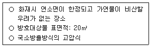
- 260 kg
- 286 kg
- 364 kg
- 520 kg
(정답률: 49%)
107. 분말소화설비의 화재안전기준상 전역방출방식일 때 방호구역의 체적 1m3에 대한 소화약제량으로 옳은 것은?
- 제1종 분말: 0.60 kg
- 제2종 분말: 0.24 kg
- 제3종 분말: 0.24 kg
- 제4종 분말: 0.36 kg
(정답률: 70%)
108. 분말소화설비의 화재안전기준상 가압식 분말소화설비 소화약제 저장용기에 설치하는 안전밸브의 작동압력 기준은?
- 최고사용압력의 1.8배 이하
- 최고사용압력의 0.8배 이하
- 내압시험압력의 1.8배 이하
- 내압시험압력의 0.8배 이하
(정답률: 51%)
109. 자동화재탐지설비의 감지기 설치기준으로 옳은 것은?
- 정온식감지기는 주방ㆍ보일러실 등으로서 다량의 화기를 취급하는 장소에 설치하되, 공칭작동온도가 최고주위온도보다 10 ℃ 이상 높은 것으로 설치할 것
- 감지기(차동식분포형의 것을 제외한다)는 실내로의 공기유입구로부터 0.8 m 이상 떨어진 위치에 설치할 것
- 스포트형감지기는 65° 이상 경사되지 아니하도록 부착할 것
- 감지기는 천장 또는 반자의 옥내에 면하는 부분에 설치할 것
(정답률: 77%)
110. 승강식피난기 및 하향식 피난구용 내림식사다리 설치기준에 관한 설명으로 옳은 것은?
- 대피실 내에는 일반 백열등을 설치 할 것
- 사용 시 기울거나 흔들리지 않도록 설치할 것
- 대피실의 면적은 3m2(2세대 이상일 경우에는 5m2) 이상으로 할 것
- 착지점과 하강구는 상호 수평거리 5cm 이상의 간격을 둘 것
(정답률: 70%)
111. 청정소화약제소화설비 설치시 화재안전기준으로 옳지 않은 것은?
- 저장용기는 온도가 65℃ 이상이고 온도의 변화가 작은 곳에 설치할 것
- 저장용기를 방호구역 외에 설치한 경우에는 방화문으로 구획된 실에 설치할 것
- 수동식 기동장치는 해당 방호구역의 출입구부근 등 조작을 하는 자가 쉽게 피난할 수 있는 장소에 설치할 것
- 수동식 기동장치는 5kg 이하의 힘을 가하여 기동할 수 있는 구조로 설치할 것
(정답률: 73%)
112. 누전경보기의 화재안전기준상 누전경보기의 설치기준으로 옳은 것은?
- 변류기를 옥외의 전로에 설치하는 경우에는 옥내형으로 설치할 것
- 누전경보기의 전원을 분기할 때에는 다른 차단기에 따라 전원이 차단 되도록 할 것
- 누전경보기 전원의 개폐기에는 누전경보기용임을 표시한 표지를 할 것
- 누전경보기 전원은 분전반으로부터 전용회로로 하고, 각극에 개폐기 및 25 A 이하의 과전류차단기를 설치 할 것
(정답률: 73%)
113. 비상경보설비 및 단독경보형감지기의 화재안전기준상 용어의 정의로 옳지 않은 것은?
- “비상벨설비”란 화재발생 상황을 경종으로 경보하는 설비를 말한다.
- “자동식사이렌설비”란 화재발생 상황을 사이렌으로 경보하는 설비를 말한다.
- “발신기”란 화재발생 신호를 수신기에 자동으로 발신하는 장치를 말한다.
- “단독경보형감지기”란 화재발생 상황을 단독으로 감지하여 자체에 내장된 음향장치로 경보하는 감지기를 말한다.
(정답률: 75%)
114. 자동화재속보설비의 화재안전기준에 관한 설명으로 옳지 않은 것은?
- 문화재에 설치하는 자동화재속보설비는 속보기에 감지기를 직접 연결하는 방식(자동화재탐지설비 1개의 경계구역에 한한다)으로 할 수 있다.
- 조작스위치는 통상 1m 미만으로 설치하지만 특별한 높이 규정은 없으며 신속한 전달이 중요하다.
- 자동화재탐지설비와 연동으로 작동하여 자동적으로 화재발생 상황을 소방관서에 전달되는 것으로 하여야 한다.
- 속보기는 소방관서에 통신망으로 통보하도록 하며, 데이터 또는 코드전송 방식을 부가적으로 설치 할 수 있다.
(정답률: 78%)
115. 자동화재탐지설비의 수신기 설치기준으로 옳지 않은 것은?
- 4층 이상의 특정소방대상물에는 발신기와 전화통화가 가능한 수신기를 설치할 것
- 해당 특정소방대상물의 경계구역을 각각 표시할 수 있는 회선수 미만의 수신기를 설치할 것
- 하나의 경계구역은 하나의 표시등 또는 하나의 문자로 표시되도록 할 것
- 수신기의 음향기구는 그 음량 및 음색이 다른 기기의 소음 등과 명확히 구별될 수 있는 것으로 할 것
(정답률: 80%)
116. 다음 조건의 창고건물에 옥외소화전이 4개 설치되어 있을 때 전동기펌프의 설계 동력은? (단, 주어진 조건 이외의 다른 조건은 고려하지 않고, 계산결과값은 소수점 셋째자리에서 반올림함)
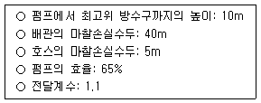
- 14.34 kW
- 15.45 kW
- 17.75 kW
- 30.90 kW
(정답률: 43%)
117. 광원점등방식의 피난유도선에 관한 설치기준으로 옳은 것을 모두 고른 것은?
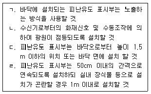
- ㄱ, ㄹ
- ㄱ, ㄷ
- ㄴ, ㄷ
- ㄴ, ㄹ
(정답률: 68%)
118. 비상조명등의 화재안전기준에 따라 지하상가에 휴대용 비상조명등을 설치할 때 옳은 것은?
- 보행거리 50m마다 3개를 설치하였다.
- 보행거리 50m마다 1개를 설치하였다.
- 보행거리 25m마다 3개를 설치하였다.
- 바닥으로부터 1.8m 높이에 설치하였다.
(정답률: 60%)
119. 비상콘센트설비의 전원부와 외함 사이의 정격전압이 250 V일 때 절연내력 시험 전압은?
- 1,000 V
- 1,200 V
- 1,250 V
- 1,500 V
(정답률: 63%)
120. 연소방지설비를 설치하는 지하구에 방화벽을 설치하려고 한다. 방화벽의 설치기준으로 옳지 않은 것은?
- 내화구조로서 홀로 설 수 있는 구조일 것
- 방화벽에 출입문을 설치하는 경우에는 방화문으로 할 것
- 방화벽을 관통하는 케이블ㆍ전선 등에는 내열성이 있는 화재차단재로 마감할 것
- 방화벽의 위치는 분기구 및 환기구 등의 구조를 고려하여 설치할 것
(정답률: 53%)
121. 연결송수관설비 방수구의 설치기준으로 옳지 않은 것은?
- 아파트의 경우 계단으로부터 5m 이내에 설치한다.
- 바닥면적이 1,000m2 미만인 층에 있어서는 계단 부속실로부터 10m 이내에 설치한다.
- 방수구는 개폐기능을 가진 것으로 설치하여야 하며, 평상 시 닫힌 상태를 유지한다.
- 방수구는 연결송수관설비의 전용방수구 또는 옥내소화전방수구로서 구경 65mm의 것으로 설치한다.
(정답률: 65%)
122. 특별피난계단의 계단실 및 부속실 제연설비 화재안전기준상 급기송풍기의 설치기준으로 옳지 않은 것은?
- 송풍기의 송풍능력은 송풍기가 담당하는 제연구역에 대한 급기량의 1.5배 이상으로 할 것
- 송풍기에는 풍량조절장치를 설치하여 풍량조절을 할 수 있도록 할 것
- 송풍기에는 풍량을 실측할 수 있는 유효한 조치를 할 것
- 송풍기는 옥내의 화재감지기의 동작에 따라 작동하도록 할 것
(정답률: 58%)
123. 연결살수설비를 설치하여야 할 특정소방대상물 또는 그 부분으로서 연결살수설비 헤드 설치 제외 장소가 아닌 것은?
- 목욕실
- 발전실
- 병원의 수술실
- 수영장 관람석
(정답률: 74%)
124. 다음 조건의 거실제연설비에서 다익형 송풍기를 사용할 경우 최소 축동력은? (단, 계산결과값은 소수점 둘째자리에서 반올림함)
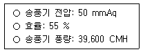
- 9.8 kW
- 10.5 kW
- 11.8 kW
- 15.5 kW
(정답률: 54%)
125. 옥내소화전설비의 화재안전기준상 수조의 설치기준으로 옳지 않은 것은?
- 수조의 외측에 수위계를 설치할 것
- 동결방지조치를 하거나 동결의 우려가 없는 장소에 설치할 것
- 수조의 밑 부분에는 청소용 배수밸브 또는 배수관을 설치할 것
- 수조의 상단이 바닥보다 높은 때에는 수조의 외측에 이동식 사다리를 설치할 것
(정답률: 69%)